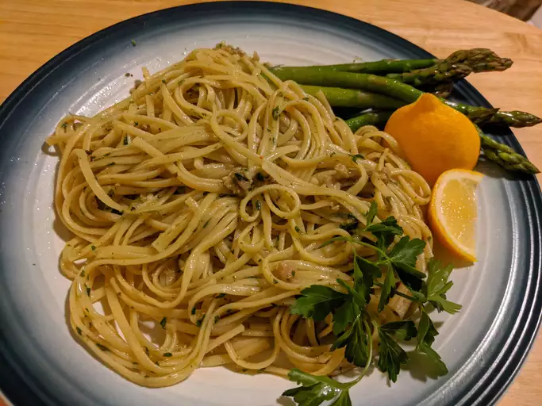

Linguine with Clam Sauce

Description
This linguine with clam sauce is an easy, inexpensive meal. Try the clam sauce over any pasta;
lemon-pepper linguine is especially tasty. You can stretch the sauce for larger portions by adding 1/2 cup of chicken broth.
Ingredients
- 1 (16 ounce) package linguini pasta
- 2 (6.5 ounce) cans minced clams, with juice
- ½ cup vegetable oil
- ¼ cup butter
- 1 tablespoon dried parsley
- ¼ tablespoon dried basil
- ½ teaspoon minced garlic
- ground black pepper to taste
Steps
- Bring a large pot of lightly salted water to a boil. Cook linguine at a boil until tender yet firm to the bite, about 11 minutes. Drain.
- While the pasta is cooking, combine clams with juice, oil, butter, parsley, basil, garlic, and pepper in a large saucepan. Cook over medium heat until boiling.
- Serve warm clam sauce over pasta.